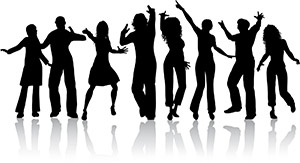
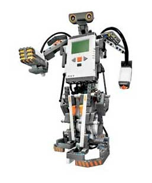
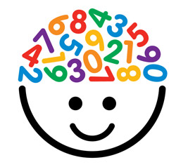
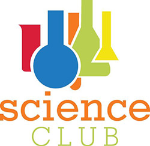
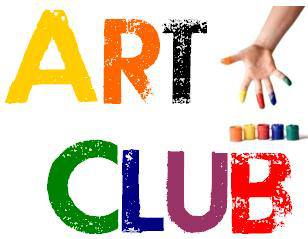

Various clubs enhance the innate talent of each and every student in the skills of their choice. We feel it our pleasure to introduce our assorted leader boards.
1. ENGLISH LITERATURE CLUB
“Uprising of future leaders, enhancing interactive capabilities”
Language is the lens through which human beings perceive the world. If so why English is the most distorting lens through which we see the world.
Literature club has been carrying the responsibility to enable the students to bring out the caliber of their inner capabilities and brighten their oratorical skills. Our sincere effort is to create an innate talent of confidence and accuracy in our students while interacting in English.
Our Objectives:-
Our club has paved a way towards successful interaction in English language through various activities like |Debates| Elocution |Dramatization |Extempore |Group discussion |Open-ended stories| Recitation |Creative writing |Poster making |Projects display.
2. DANCE AND MUSIC CLUB
Every festive occasion, every burst of emotion and every small and big celebration begins and concludes with music and dance.
Music and Dance club creates in a child an innate interest through the activities related to physio-cultural programs. Vocal music, orchestra, folk styles, contemporary, solo and cluster performances are the vivid activities through which we enrich the creativity and culture in our students.
These activities help in revitalizing our brain and nourishing our nerves and act as recreational supplement to the daily’s strenuous, tedious routine. We focus to improve concentration of the individuals and generate in them inter-personal bond among the peers through group practices.
3. ROBOTICS CLUB
ROBOT a system that contains sensors viz: light, sound, touch, ultrasonic, control system, manipulators and software all working together to perform a task.
Robotics club in our school introduces the children robotics at an early age. Our club crew members present major projects every year and prove to be the centre of attraction and bring the glory to PARAS VIDYA VIHAR to run such an exotic club which is the only one of its type in Madhya Pradesh.
4. MATHS CLUB
sSTEP TOWARDS LOVING MATHEMATICS
“MATHEMATICS OH ! The greatest confusion. I would like to be hundred steps away from such a dreadful subject “. This is the general expression of a child about Mathematics. But is Mathematics so unimpressive?
The motive of our Mathematics club is to eradicate this mind setup from the child’s brain. We have come forward to wipe out this conception and create immense love and interest of Mathematics in a student.
Objectives:-
To avail critical understanding in the students particularly by the way of motivation, visualization of basic concepts, terms, principles, symbols.
5. SCIENCE CLUB
Be factual, Truthful and successful.
A science club is an out-of school hour’s club that offers students the chance to perform science related activities that extend and enhance their knowledge of science and technology.
Science club could be defined as a magnificent tool to improve the culture of science learning in the school campus.
Motive:-
Science Exhibition |Quiz |Chart Display |Topic based Extempore | Projects are the activities conducted to create a scientific temperament in our students.
6. ECO CLUB
Through this club we would spread the awareness towards conservation and better methods of growing plants, avoiding use of polythene bags, water management and environment protection.
Holistic and Ecological view could be imparted in our students through various activities like Poster making, presentations, seminars, skits, competitions and plantation programmes.
Producing “BEST OUT OF WASTE” in SUPW PERIOD is our objective.
7. ART CLUB

“USE IT UP, WEAR IT OUT AND MAKE IT DO”
ART CLUB is organised to teach the students various types of art and craft and to imbibe the fine nuances of their creativity. Different types of painting techniques, craft, drawings and calligraphy are the parts of our training. We invoke our students and boost them to create curiosity, imagination and creativity. We also mould them for promoting “BEST OUT OF WASTE”.